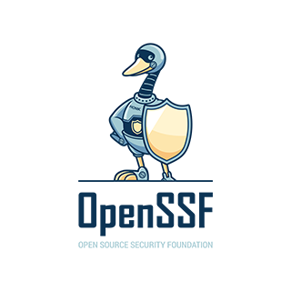
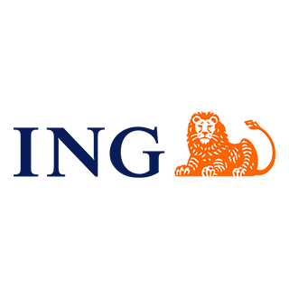

Training & Guidance for doing AppSec right!
SKF is a fully open-source Python-Flask / Angular web-application that uses many other great open source projects to train you and your team in building secure applications, by design.
SKF in your SDLC
Discover where the Security Knowledge Framework can be implemented in your teams Software Development Life Cycle.
- Requirements
- Define your projects requirements or create your own scope of requirements. Out of the box SKF comes with ASVS and MASVS checklists and expert systems included.
- Design
- Detect possible threats based on the processing functions on your application. Use SKF to define security acceptence criteria for your features, so your developers know from the get-go how to mitigate risks.
- Coding
- An extensive library of common hacks, exploits, and best practices. Learn the hacker mindset and keep your project secure.
- Testing
- All requirements come with Knowledgebase items and references to the OWASP cheatsheet / OWASP testing guide series. SKF also gives reccomendations on tooling that can be used to automate testing of your requirements.
- Culture Building
- Invite team members and work together and spread a security first mindset.
- Training
- An extensive and different learning paths and interactive labs for a wide range of functions, beautifully commented.
- Metrics
- Keep track of open and closed security issues in your project.
SKF Features
Secure coding starts here.
-
Projects
Create projects in SKF and start gathering requirements for your features/sprints
-
Code Examples
An extensive library of common hacks, exploits, and best practices. Learn the hacker mindset and keep your project secure..
-
Checklists
Out of the box SKF comes with ASVS and MASVS included.
-
Training platform
Train your secure coding & hacking skills with over 150+ interactive labs that you can run locally or trough the SKF UI in your Kubernetes cluster.
-
Knowledge Base
All requirements are correlated to knowledgebase items to give you more in depth information about attack vectors, impact, mitigation and best practices.
-
User Management
Manage your users by adding linking SKF to your favourite OIDC provider
-
Design Patterns
We included the most used user-stories in SKF to get your team get started quickly implementing ASVS in your projects.
-
Support
Find us on our Gitter channel to ask us anything about SKF and how to get yourself started.
SKF as a Service
Don't want the hassle of setting up and maintaining your own instance? No problem, we can provide SKF as a SaaS!
Get started
-
Documentation
First time users should start here. Instructions on how to install, and troubleshooting.
-
Contribute
We encourage you to contribute to SKF, feel free to fork the project on Github.
-
Chat with us
We are very active in the SKF Gitter chat. We look forward to welcome you!
-
Support
Need help with anything not covered in the docs? Feel free to post your issue.
-
Donate / Sponsor a feature
All financial contributions directly support future development and features of SKF.
Security knowledge framework is licensed under the Apache 2.0 licence
Supporters
Organisations & Companies who deserve our spotlight
-

The SKF Project is part of the OpenSSF Working group: Best Practices for Open Source Developers. Our objective is to provide open source developers with best practices recommendations, and with an easy way to learn and apply them. Unlike other existing best practices list, we want it to be widely distributed to open source developers and community-sourced. And we want these practices to stick, thanks to an effective learning platform (Keeper).
-

Special mention to ING for spending significant hours into the SKF Project and the learning platform (Keeper) and fully supporting us in the SKF initiatives.
-

Special mention to Microsoft for spending significant hours into the SKF Project and the learning platform (Keeper) and giving us the Azure Kubernetes platform to host the SKF instance.
-
We owe gratitude to Google and the amazing GSoC program they run, the SKF team is mentoring students for the past years and added tons of major improvements.
-
We also want to call out Personio’s amazing work in helping the SKF Project grow and allowing it to reach new frontiers with AWS support, while propelling several other SKF initiatives.
Thank you
SKF Thrives because of these projects
-
OWASP ASVS
The project provides a basis for testing web application and also provides developers with a list of requirements for secure development.
-
OWASP MASVS
The project provides a basis for testing mobile application and also provides developers with a list of requirements for secure development.
-
OWASP CheatSheets
The project was created to provide a set of simple good practice guides for application developers and defenders to follow.
-
OWASP Juiceshop
OWASP Juice Shop is probably the most modern and sophisticated insecure web application to train your AppSec skills!
-
OWASP WSTG
The premier cybersecurity testing document resource for web application developers and security professionals.
-
ZAP
ZAP is an open-source web application security scanner, this can't be missing in your security toolkit!
-
OWASP TOP 10
The OWASP Top 10 is a standard awareness document for developers and web application security.
-
OpenSSF
The Open Source Security Foundation has developed a trio of free courses 'Secure Software Development Fundamentals' on how to develop secure software.